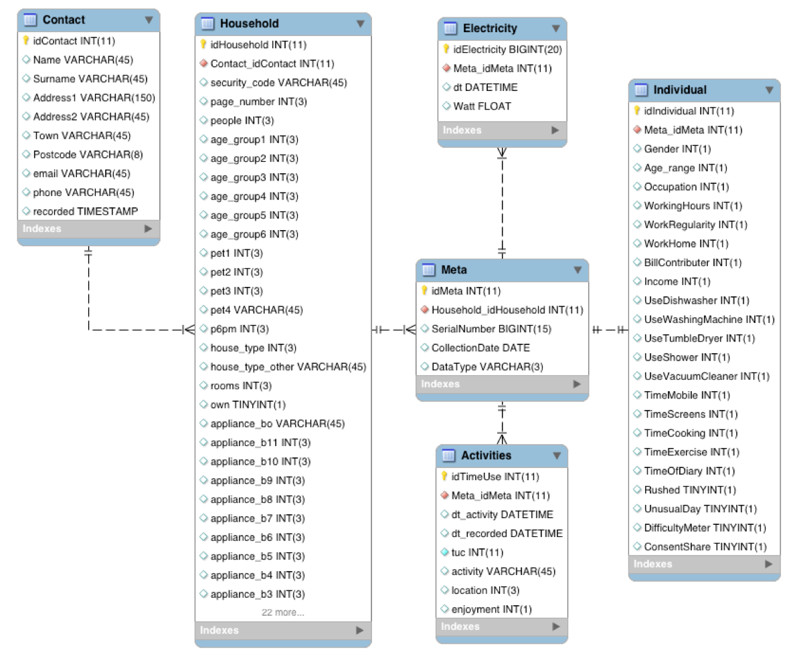

Meter study¶
The Meter Study is a research project at the University of Oxford’s Environmental Change Institute (ECI) collecting data on household demographics, activities and electricity use. The aim is to better understand the timing of electricity use in households and identify potential routes towards flexibility in electricity use, which could support the emergence of more sustainable energy systems.
Content:
Modules in this Repository¶
Meter¶
This module provides SQL functionality to connect, query and upload to the database.
// .. automodule:: meter // :members:
Meter interface¶

The Meter interface is a terminal based app to configure the research tools of the Meter study and support data handling with the MySQL database. The forms support Mutt-style navigation and key bindings, based on the npyScreen package.
-
class
interface.ActionControllerData(*args, **keywords)[source]¶ action key shortcuts
-
class
interface.MeterMain(*args, **keywords)[source]¶ npyScreen from with mutt style features
-
ACTION_CONTROLLER¶ alias of
ActionControllerSearch
-
MAIN_WIDGET_CLASS¶ alias of
ActionControllerData
-
-
class
interface.editContactForm(name=None, parentApp=None, framed=None, help=None, color='FORMDEFAULT', widget_list=None, cycle_widgets=False, *args, **keywords)[source]¶ gets fields from database, collects new entries
-
class
interface.editHouseholdForm(name=None, parentApp=None, framed=None, help=None, color='FORMDEFAULT', widget_list=None, cycle_widgets=False, *args, **keywords)[source]¶ EditHousehold - Shows all entries for editing
-
interface.getDateTimeFormated(dts)[source]¶ DateTimeString as received from database: return 31 Jan 16
-
interface.getDeviceRequirements(householdID)[source]¶ formated list of counters and ‘E’ for people/eMeter
-
interface.getDeviceSerialNumber(meterType)[source]¶ download the sn from device - if none present, set one up
-
interface.getHHdtChoice(hhID)[source]¶ reads a sql date in format “2016-12-31” and returns datetime object
-
interface.getMetaData(MetaFile, ItemName)[source]¶ extract content from meta file (or any other file)
-
interface.getReadingPeriods(_householdID, _condition, _duration)[source]¶ returns start and end of consequitive records matching the condition
-
class
interface.metaFileInformation(name=None, parentApp=None, framed=None, help=None, color='FORMDEFAULT', widget_list=None, cycle_widgets=False, *args, **keywords)[source]¶ The MetaForm
-
class
interface.newContactForm(name=None, parentApp=None, framed=None, help=None, color='FORMDEFAULT', widget_list=None, cycle_widgets=False, *args, **keywords)[source]¶ gets fields from database, collects new entries
-
interface.next_period(thisTime)[source]¶ advances datetime object by 10 minutes, e.g. ‘04:50:00’ -> ‘05:00:00’
-
interface.printSticker(text, fileName)[source]¶ pandoc file into printabe format and send to printer
-
interface.setSerialNumber(SerialNumber)[source]¶ command typed number is set as serial number for current metaID
Meter mailer¶
A utility to send emails to mailing lists and contacts in the Meter Database. Built on a similar framework as the Meter interface.
See full Documentation for more detail.
Utils¶
This folder contains an number of useful utilities for common tasks.
json2sql¶
Used to transfer json data to the database. Originally these files were created in json.
The activities json file was developed for and is principally used by `Meter App`__. This python script makes the title in json available in the database as the meaning for each tuc (ID in json).
-
json2sql.main()[source] Populates an sql table Legend based on json data Fields are
- table - the name of the sql table for which these values and meanings apply
- column - the column in that table - for activities.json this takes on the definition of the tuc range (see insertActivitiesJSON)
- value - the entry in this column
- meaning - a plain text description of that this value means (e.g. 0:= Female)
cockpit¶
Creates a table summary in markdown table format.
-
cockpit.main(argv)[source] cockpit.py
options:[-h,–help]
this help[-l,–localhost]
override default host to use localhost
Default: energy-use.org
Example: python cockpit.py -l
[-c,–condition]
add sql criteria
Default: None
Example: python cockpit.py -c ‘quality = 1 AND people > 3’
[-t,–table]
specify table.
Default: Household
Example: python cockpit.py -t ‘Individual’
app_tree¶
Interactive command line interface to step through the screen options of the `Meter App`__
-
app_tree.main(argv)[source] Interactive command line tool.Explore activity choices of screens in the MeterApp.
Use: python appSreens.py [-c]
Option ‘c’ displays the number of times a sequence of two buttons was used by study participants
sql¶
-
sql.main(argv)[source] A tool to develop and test SQL statements.
Example: python sql.py -q ‘SELECT * FROM table’
- [-h,–help]
- this help
- [-l,–localhost]
- use localhost [default: 109.74.196.205]
- [-s,–seperator]
- specify column seperator [default: tab]
- [-w,–width]
- column width [default: 10]
- [-q,–query | -f,–file]
- SQL query as argument or read from a file
- [-o,–output]
- sepcify output file name [default: sql_result.txt]
The Meter Database¶
This section explains
- the types of data collected as part of the Meter project;
- how these data are structured, stored and retrieved; and
- the tools used to manage the data.
This is a live document. For the latest version, please visit Meter/docs.
What data are collected?¶
Meter collects three types of data:
- Household and individual survey information
- Individual activity information
- Electricity readings at household level
Each of these data are explained in more detail here.

Database schema for Meter Data
Household and individual survey information¶
Survey information is grouped into three tables:
Contact: This is personal information with restricted access (all other data will become public). It is provided by participants when registering via energy-use.org/hhq.php.
Household: Socio-demographic information about household composition (number of people, ages, housetype, appliances, electricity bills income). This table also keeps the ‘date_choice’ - the preferred date for the study, and ‘status’ (see Section ‘Status progression’).
Individual: Collected on the study day via the booklet or app. Covers individual information, such as age, occupation, working hours, use of appliances...
Individual activity information¶
Recorded via booklet or app. Each entry contains:
Time (dt_activity): Freely chosen by participant (unlike in conventional Time-use research, where 10 minute windows are prescribed). Certain times of particular interest will be suggested in the app (e.g. 5:30pm, 6pm, 8am). ‘dt’ stands for DateTime in the format ‘2012-11-13 23:59:59’.
Time recorded (dt_recorded): The time when the entry was made. In case of the app, entries can be back-dated (what did you do 20 minutes ago?). Booklets may be coded up days later. Entries made via the web-interface later still. This time stamp helps to identify ‘how devoiced’ the entry is from the actual event.
Time use code (tuc): Numeric code based on an extended version of the Harmonised European Time-Use Survey codes (@eurostat14). See field ‘ID’ in activities.json.
Activity: Plain text description of the activity. See field ‘title’ in activities.json.
Location: Numeric code for location:
- home
- travelling
- work
- public place
- outdoors
- other
- not specified
Enjoyment: Numeric code for enjoyment:
- not at all
- not very much
- neutral
- somewhat
- very much
- not specified
Electricity readings¶
Collected via current clamp connected to an Android phone using DMon software. Recordings are taken every second and stored in a csv file with two columns: a DateTime stamp ‘2012-11-13 23:59:59’) and the reading in Watt. The file name refers to the Meta table ‘idMeta’ value followed by underscore and a sequential number for each time readings were started for this device with this ‘idMeta’. Often the xxxx_2.csv file contains the ‘real’ readings, because the phone was started up for testing before shipment. A xxxx_03.csv file is created when starting up the phone to process the data.
When uploading to the database this file is copied to the server first to speed up the database processing. Each reading is a row with an ID (idElectricity) the reference to the Meta entry (Meta_idMeta), the DateTime stamp and the reading value in Watt.
Database structure¶
The Meta table is central to the data structure as shown in Figure 1. The name is perhaps an unfortunate left over from early trials with data structure. It could equally be called the ‘devices’, ‘instruments’ or ‘study events’.
Each row in this table has a unique ID (idMeta) and represents either a booklet or a phone that has been sent out. The entry is created as part of the equipment set up. Each household gets one entry for the electricity recorder (eMeter) they receive and one for each booklet or activity app. DataType for an eMeter is ‘E’, whereas a booklet or device with the activity app is labelled ‘A’.
When devices are returned the CollectionDate, which is ‘NULL’ until now is updated.
Individual and Activity data share the same idMeta value, because they come from the same instrument and can thus be linked. Individual/Activity data and Electricity readings can be linked to their Household via the Household_idHousehold reference in their Meta entry and vice versa: To find all Activities for a given Household with the ID 1234 one could use the following SQL statement:
SELECT idMeta
FROM Meta
WHERE Household_idHousehold = 1234 AND DataType = 'A';
This will return one idMeta for each individual which has completed a study day. The activities can then be retrieved for each of these returned values. If 6789 was returned, the activity record can be accessed with:
SELECT dt_activity,activity
FROM Activities
WHERE Meta_idMeta = 6789;
This will produce a list of DateTime values and the description of the activity.
Further information¶
The data handing is principally conducted with the Meter Interface. This repository includes a dummy database file in /dbDummy which can be used for experimenting. To set this up you require a working MySQL version on your machine. Create a user and grant privileges to the data.
To gain access to the live Meter database on www.energy-use.org you will need to be granted access.
Configuring Devices¶
Prepare root/flash¶
Install packages (.apk)
- root
- Insecure
- Flashify
- AppRemover
- AppHider
- AppLock
- ButtonRemap
- Tasker
Copy
- recovery.img
Settings
- Lock settings
- Select Lock screen
- None
Open “Uninstall” (AppRemover)
- System app
- delete about 43 apps
- User app > remove:
- MyEE
- SuperBattery
Open “AppHider”
- hide all but the downloaded apps
- hide Settings
- Pin Code -> Never Show
Open “Tasker”
- Profile > [+] > Event > Display > Off
- [+] task
- App > Launch > Meter
Open “Button Remapper”
- enable service > OK
- [+] Short and long press
- BACK > do nothing
- Home > do nothing
Open “AppLock”
- lock all but Meter
Create Backup¶
adb reboot recovery
- BACKUP
- tick all
- > Options > enable compression
- swipe to backup (392s)
Copy backup folder to local machine
adb pull /sdcard/TWRP ./TWRP
eMeter setup¶
Requires: Pixi 3 - Android 4.2.2
Assume device is rooted, Insecured
From bash with USB connected:
adb push recovery.img /sdcard/recovery.img
adb install Flashify.apk
adb push ./TWRP /sdcard/TWRP
Open “Flashify”
- OK, OK, OK
- Recovery image
- select /sdcard/recovery.img
- Flashing (2 min)
adb reboot recovery
- RESTORE , select, swipe
adb shell
mkdir /sdcard/METER/
exit
adb push id.txt /sdcard/METER
aMeter setup¶
Requires: Pixi 4 - Android 6
Start device > Settings –> developer options –> OEM unlocking (allow bootloader unlock)
From shell with USB connected (you may need to reconnect the USB cable between each step):
adb reboot bootloader
fastboot oem unlock
Confirm with <VOL UP>
fastboot flash recovery recoverypixi4.img
fastboot format userdata
fastboot reboot
Select <Restore>
Select > SD card > img file
MeterActivities (JSON)¶
A json structure for activities and their navigation
Screens¶
Lists keys to activities.json Each screen key has six such ‘activity’ keys
Activities¶
Each entry can be thought of as a button on the screen
- “caption” is displayed on the button
- “title” describes the activity on the home screen and is used as plain text description in visualisations
- “ID” is the time-use-code based on an extended version of HETUS
- “help” optionally displayed in the app to explain the meaning of a button
- “value” used for ranking questions or for numerical calculations, such as relative adjustment of time by, say, 15 minutes
- “icon” and image file in png format stored in /img
- “next” key in screen.json to display the next screen after pressing this button
LegendHousehold¶
- all columns in the Household table of the Meter database are listed as keys
- under each key possible values are assigned their ‘meaning’ as plain text
- “q” denotes the question asked to which these are the anwers
- not all possible answers are listed. For instance, counted values like “How many screens do you have”, can be left as numerical values
- Note all these values have been uploaded to Table Legend in the Meter schema using json2sql
LegendIndividual¶
- same as Legend Household, but for table Individual on Meter database
- Note all these values have been uploaded to Table Legend in the Meter schema using /utils/json2sql.py
Other Meter Repositories¶
Activity recorder¶

The app to record activities is kept in the `Meter App`__ repository (see MeterApp documentation).

{kind=link}